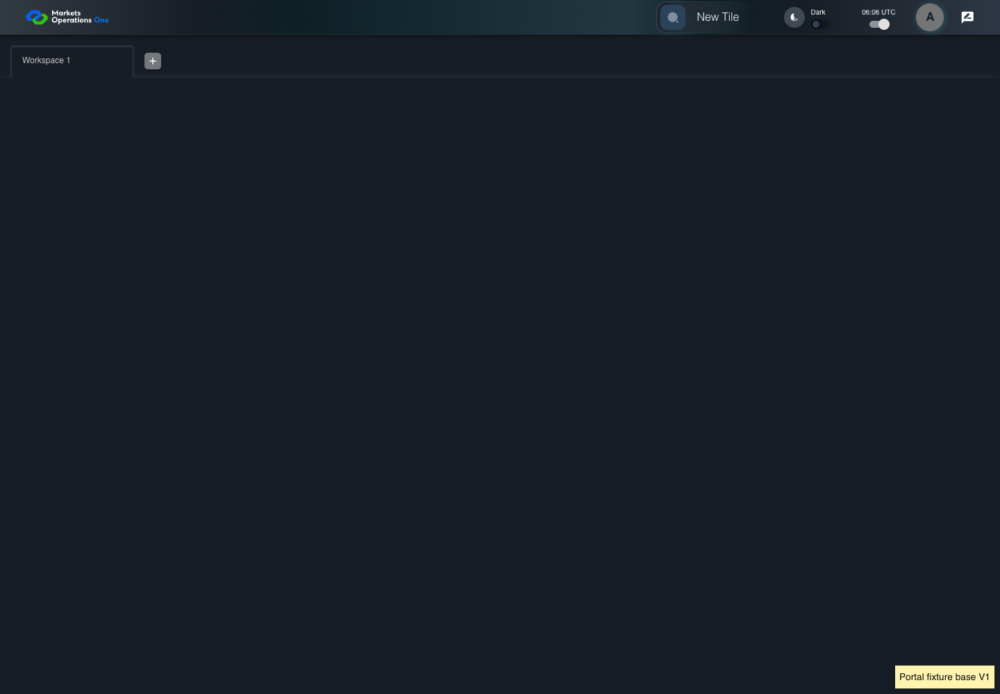
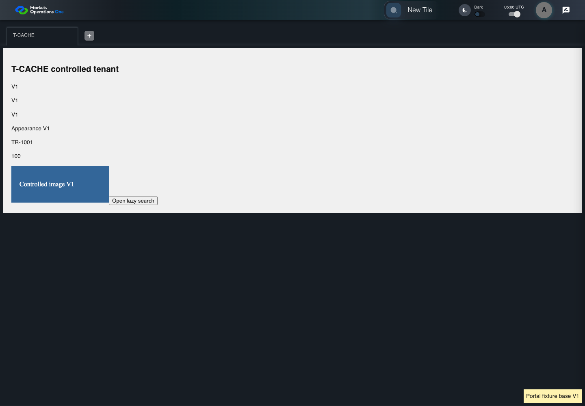

KNOW-041 real HTTP cache and controlled tenant lifecycle
PASS · application/run-050/know-041-real-http-cache-and-controlled-tenant-lifecycle-854a2c145116-attempt-1 · ACTUAL_APPLICATION_LOCAL_SERVICES
Actual current React shell and real Chromium HTTP cache. Local HTTP fixture server supplies synthetic Alice, permissions, base entry wrapper, container, tile, trade, lazy content, CSS and images. V1/V2 markers identify controlled fixture assets. No browser routing, production CDN, real business tenant, or changed base binary acceptance.
2026-10-22T06:06:52.820Z to 2026-10-22T06:06:55.784Z
Assertions and result · Artifact manifest · Exact run inputs and source hashes
Result SHA-256:3b2406e3b2946d41ba2f150803aadd42bb2e30092ab21098b9ab9a344343b5ceMachine observations
- cache-fixture-scope.json
bf221b7231e2f8a06560a04bdf8a46720b0c87fda9f18f92db73dbd1cd82b31e - catalog-permission.json
9753eb21d6ba71bb05e397cf1ef4bb3c8a3dea3c192c2e30c88110af36f47ef0 - empty-tenant-cache.json
4edac297ed623c0024a5ccb36a39b914f0e57eceba3c36b71557d40e87aa2d3b - http-cache-observations.json
c81f5a5c504e0151c4fb6034cdaeef89e43cb07a0bf81c76ac4fc293a1c8dabd
Screenshot capture: CAPTURED. Named frames: 10.
Step screenshot bindings: COMPLETE. 9/9 canonical steps have execution screenshots.
Bindings measure structural coverage only. They do not establish screenshot content quality or relevance.
Screenshot content review: NOT_REVIEWED. Recorded context: 0/10 frames. Identical image bytes: 6 repeated frames. Recorded context does not establish human visual review.
Canonical step timeline
Given Alice uses an isolated browser profile with the synthetic identity and permissions defined for this case
Execution: PASSED.
1. step-01 Visible state after step 1: Given Alice uses an isolated browser profile with the synthetic identity and permissions defined for this case
2026-10-22T06:06:54.289Z · 1440×1000
Step: /Users/lushevol/code/github/ratan-release-impact/workbench/tasks/ui-test-coverage-20261022/test-cases.md:11887
SHA-256:dfd4bd2c7fcc6f7a8f6aeaa4296748791b1ba7972d4b6c3dd1300f33c4d232a2And Alice has catalog permission for the synthetic tile with exact title "T-CACHE"
Execution: PASSED.
2. step-02 Visible state after step 2: And Alice has catalog permission for the synthetic tile with exact title "T-CACHE"
2026-10-22T06:06:54.371Z · 1440×1000
Step: /Users/lushevol/code/github/ratan-release-impact/workbench/tasks/ui-test-coverage-20261022/test-cases.md:11888
SHA-256:dfd4bd2c7fcc6f7a8f6aeaa4296748791b1ba7972d4b6c3dd1300f33c4d232a2Image bytes match frame 1. An unchanged image can be valid for consecutive assertions. This match does not establish correct step content.
And The browser HTTP cache is empty
Execution: PASSED.
3. step-03 Visible state after step 3: And The browser HTTP cache is empty
2026-10-22T06:06:54.454Z · 1440×1000
Step: /Users/lushevol/code/github/ratan-release-impact/workbench/tasks/ui-test-coverage-20261022/test-cases.md:11889
SHA-256:dfd4bd2c7fcc6f7a8f6aeaa4296748791b1ba7972d4b6c3dd1300f33c4d232a2Image bytes match frame 2. An unchanged image can be valid for consecutive assertions. This match does not establish correct step content.
And The controlled server serves base, container, and tile build "V1"
Execution: PASSED.
4. step-04 Visible state after step 4: And The controlled server serves base, container, and tile build "V1"
2026-10-22T06:06:54.516Z · 1440×1000
Step: /Users/lushevol/code/github/ratan-release-impact/workbench/tasks/ui-test-coverage-20261022/test-cases.md:11890
SHA-256:dfd4bd2c7fcc6f7a8f6aeaa4296748791b1ba7972d4b6c3dd1300f33c4d232a2Image bytes match frame 3. An unchanged image can be valid for consecutive assertions. This match does not establish correct step content.
When Alice clicks the text "New Tile" on the portal workspace page
Execution: PASSED.5. step-05 Visible state after step 5: When Alice clicks the text "New Tile" on the portal workspace page
2026-10-22T06:06:54.668Z · 1440×1000
Step: /Users/lushevol/code/github/ratan-release-impact/workbench/tasks/ui-test-coverage-20261022/test-cases.md:11891
SHA-256:3a8f188cfcc3dea63528ef5439c5f614e6c3556844d436074325beb8508dec7fThen the drawer panel headed by "Tile Options" is visible on the portal workspace page
Execution: PASSED.
6. step-06 Visible state after step 6: Then the drawer panel headed by "Tile Options" is visible on the portal workspace page
2026-10-22T06:06:54.749Z · 1440×1000
Step: /Users/lushevol/code/github/ratan-release-impact/workbench/tasks/ui-test-coverage-20261022/test-cases.md:11892
SHA-256:3a8f188cfcc3dea63528ef5439c5f614e6c3556844d436074325beb8508dec7fImage bytes match frame 5. An unchanged image can be valid for consecutive assertions. This match does not establish correct step content.
When Alice clicks the text "T-CACHE" in the drawer panel headed by "Tile Options"
Execution: PASSED.
7. step-07 Visible state after step 7: When Alice clicks the text "T-CACHE" in the drawer panel headed by "Tile Options"
2026-10-22T06:06:54.890Z · 1440×1000
Step: /Users/lushevol/code/github/ratan-release-impact/workbench/tasks/ui-test-coverage-20261022/test-cases.md:11893
SHA-256:56c2a73fcd30e0b400c3c35ec3e4568177de46115173c7c42ec40849b9cd2aa9Then The T-CACHE fixture content displays base "V1", container "V1", and tile "V1" markers
Execution: PASSED.
8. step-08 Visible state after step 8: Then The T-CACHE fixture content displays base "V1", container "V1", and tile "V1" markers
2026-10-22T06:06:54.967Z · 1440×1000
Step: /Users/lushevol/code/github/ratan-release-impact/workbench/tasks/ui-test-coverage-20261022/test-cases.md:11894
SHA-256:56c2a73fcd30e0b400c3c35ec3e4568177de46115173c7c42ec40849b9cd2aa9Image bytes match frame 7. An unchanged image can be valid for consecutive assertions. This match does not establish correct step content.
And No missing-chunk error is visible in the portal error alert
Execution: PASSED.
9. step-09 Visible state after step 9: And No missing-chunk error is visible in the portal error alert
2026-10-22T06:06:55.045Z · 1440×1000
Step: /Users/lushevol/code/github/ratan-release-impact/workbench/tasks/ui-test-coverage-20261022/test-cases.md:11895
SHA-256:56c2a73fcd30e0b400c3c35ec3e4568177de46115173c7c42ec40849b9cd2aa9Image bytes match frame 8. An unchanged image can be valid for consecutive assertions. This match does not establish correct step content.
Additional named frames

The final visible state after the named test assertions.
2026-10-22T06:06:55.193Z · 1440×1000Step: Test source: /Users/lushevol/code/github/ratan-release-impact/workbench/e2e/audit-specs/cache-lifecycle.spec.ts:14
SHA-256:
ec3d9b3c67e3ef6ed143b8149165e41a4a420d808e1412f40b79110d926602c6Screenshots establish visible state only. Assertions and traces support functional claims.